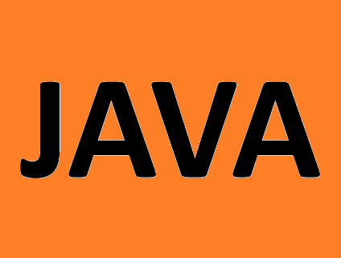

Курс Java-разработчик с нуля
За 7 месяцев получите все навыки и знания, которые нужны Java-разработчику для трудоустройства
Записаться
Программа курса
- Введение в Java
- Система контроля версий Git и GitHub
- Типы данных, переменные и константы
- Ветвления
- Циклы
- Методы и введение в классы
- Объектно-ориентированный подход (ООП)
- Наследование
- Инкапсуляция
- Полиморфизм
- Java-коллекции
- Работа с файлами
- Ошибки а Java
- Многопоточность
- Алгоритмы
- Паттерны проектирования
- Паттерн MCV и создания простого приложения
- Базы данных. SQL
- Введение в Spring Spring Web. Spring Devtools
- Работа с Базами данных в Spring приложениях. JdbcTemplate, JPA, Hibernate
- Введение в Spring REST
- Тестирование программ
- ПРоцесс разработки ПО
- CI/CD